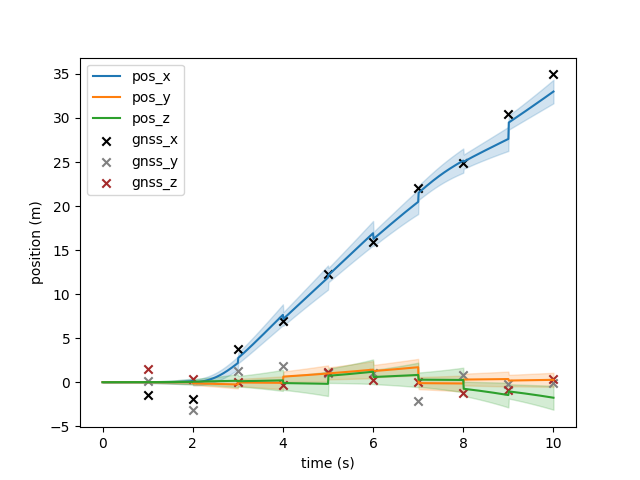
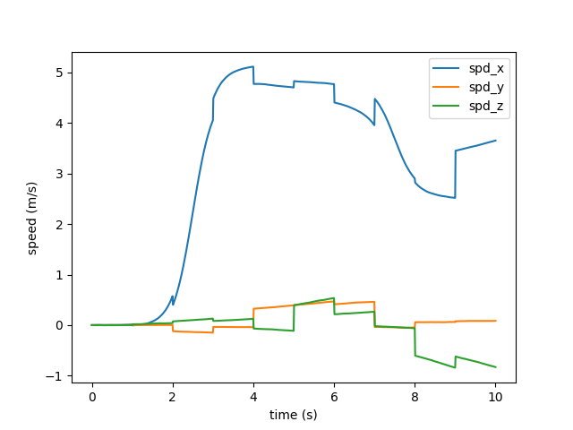
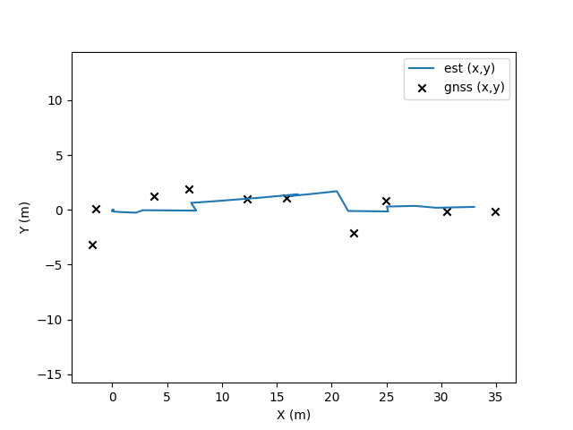
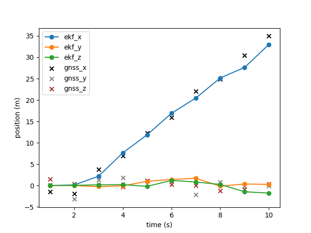
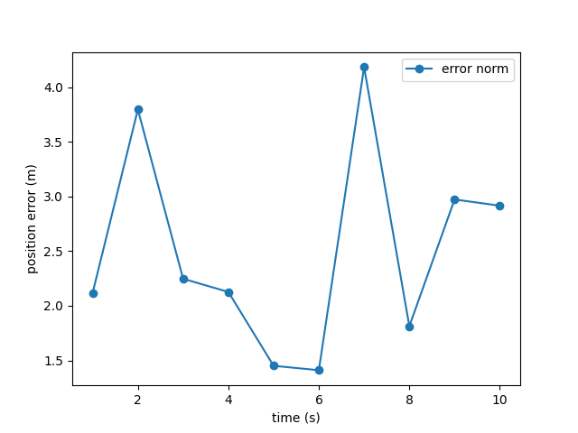

| Index | Name | Value |
|---|---|---|
| 0 | pos_x | 33.002961 |
| 1 | pos_y | 0.269668 |
| 2 | pos_z | -1.761943 |
| 3 | spd_x | 3.653794 |
| 4 | spd_y | 0.085389 |
| 5 | spd_z | -0.830597 |
| 6 | accel_bias_x | 0.053556 |
| 7 | accel_bias_y | -0.005655 |
| 8 | accel_bias_z | -0.028679 |
| 9 | w_bias_x | 0.003147 |
| 10 | w_bias_y | 0.001031 |
| 11 | w_bias_z | 0.003069 |
| 12 | psi | -0.010944 |
| 13 | theta | -0.027991 |
| 14 | gamma | -0.027040 |
| Index | Time (s) | X (m) | Y (m) | Z (m) |
|---|---|---|---|---|
| 0 | 1.000 | -1.503 | 0.116 | 1.484 |
| 1 | 2.000 | -1.874 | -3.201 | 0.384 |
| 2 | 3.000 | 3.820 | 1.263 | 0.002 |
| 3 | 4.000 | 6.944 | 1.868 | -0.307 |
| 4 | 5.000 | 12.288 | 1.030 | 1.208 |
| 5 | 6.000 | 15.907 | 1.057 | 0.281 |
| 6 | 7.000 | 22.003 | -2.107 | 0.008 |
| 7 | 8.000 | 24.946 | 0.854 | -1.247 |
| 8 | 9.000 | 30.481 | -0.167 | -0.831 |
| 9 | 10.000 | 34.950 | -0.145 | 0.368 |
| Index | Time (s) | pos_x | pos_y | pos_z | spd_x | spd_y | spd_z | psi | theta | gamma |
|---|---|---|---|---|---|---|---|---|---|---|
| 0 | 1.000 | 0.003228 | 0.000472 | -0.000589 | 0.010631 | 0.002586 | 0.000092 | -0.000918 | -0.000427 | 0.001046 |
| 1 | 2.000 | 0.130751 | 0.002791 | 0.036027 | 0.573926 | 0.002180 | 0.040215 | 0.000714 | 0.000053 | 0.002357 |
| 2 | 3.000 | 2.174290 | -0.258273 | 0.167651 | 4.055100 | -0.150228 | 0.128963 | 0.000256 | 0.009953 | 0.004836 |
| 3 | 4.000 | 7.652216 | -0.070384 | 0.209336 | 5.116762 | -0.040745 | 0.125015 | 0.002006 | -0.007482 | 0.002993 |
| 4 | 5.000 | 11.884236 | 0.987398 | -0.185491 | 4.703344 | 0.391323 | -0.113008 | 0.003306 | 0.008773 | -0.005270 |
| 5 | 6.000 | 16.917992 | 1.425561 | 1.192806 | 4.771059 | 0.469250 | 0.536008 | 0.001763 | 0.006033 | 0.014252 |
| 6 | 7.000 | 20.476549 | 1.700191 | 0.827535 | 3.957884 | 0.460956 | 0.264536 | 0.001392 | 0.023089 | 0.005024 |
| 7 | 8.000 | 25.161574 | -0.146110 | 0.250312 | 2.902942 | -0.049065 | -0.062361 | -0.002768 | 0.003106 | -0.006545 |
| 8 | 9.000 | 27.623517 | 0.358155 | -1.458880 | 2.518952 | 0.061751 | -0.841956 | -0.012877 | 0.006069 | -0.029688 |
| 9 | 10.000 | 33.002961 | 0.269668 | -1.761943 | 3.653794 | 0.085389 | -0.830597 | -0.010944 | -0.027991 | -0.027040 |
Generated by run_and_export.py
| Metric | X (m) | Y (m) | Z (m) | Norm (m) |
|---|---|---|---|---|
| RMSE | 1.5816 | 1.8009 | 1.1506 | 2.6587 |
| Mean abs error | 1.3825 | 1.2937 | 0.9896 | 2.5034 |

